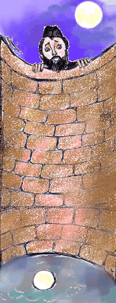
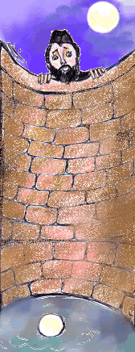

The Rabbit And The Tortoise Story
A foolish man lives in a village in Russia.
(Rusyada köyün birinde aptal bir adam yaşar)
One day he goes to a well.
(bir gün bir kuyunun yanına gider.)
He looks into the well.
(kuyunun içine bakar.)
He sees the moon in the well.
(ayı kuyunun içinde görür.)
He is very surprised because he thinks the moon fell into the well.
(çok şaşırır çünkü ay kuyuya düştü sanır.)
He says to himself, I must pull it out”
(Kendi kendine onu çekip çıkarmalıyım der.)
He runs home and takes a hook.
(eve koşar ve bir kanca alır.)
He goes to the well again.
(tekrar kuyunun yanına gider.)
He unties the rope from the bucket and ties it to the hook.
(ipi kovadan çözer Ve onu kancaya bağlar.)
He puts the hook into the well.
(kancayı kuyuya atar.)
He pulls it, but it doesn’t come out of the well
(kancayı çeker ama o çıkmaz
because it is under a big stone.
çünkü o büyük bir taşın altındadır)
It is stuck under the big Stone
(Buyük taşın altına sıkışır)
He pulls it again with all his strength.
(onu tekrar bütün gücüyle çeker.)
Suddenly the hook comes out of the well.
(aniden kanca kuyudan dışarı gelir.)
The man falls onto his back.
(adam sırt üstü düşer.)
His legs are up.He looks into the sky.
(ayakları yukarı kalkar.)(gökyüzüne bakar.)
He sees the moon in the sky.
(ayı gökyüzünde görür.)
He says, “I am clever. I have put the moon into the sky.”
(çok akıllıyım ayı gökyüzüne çıkardım der.)
 
